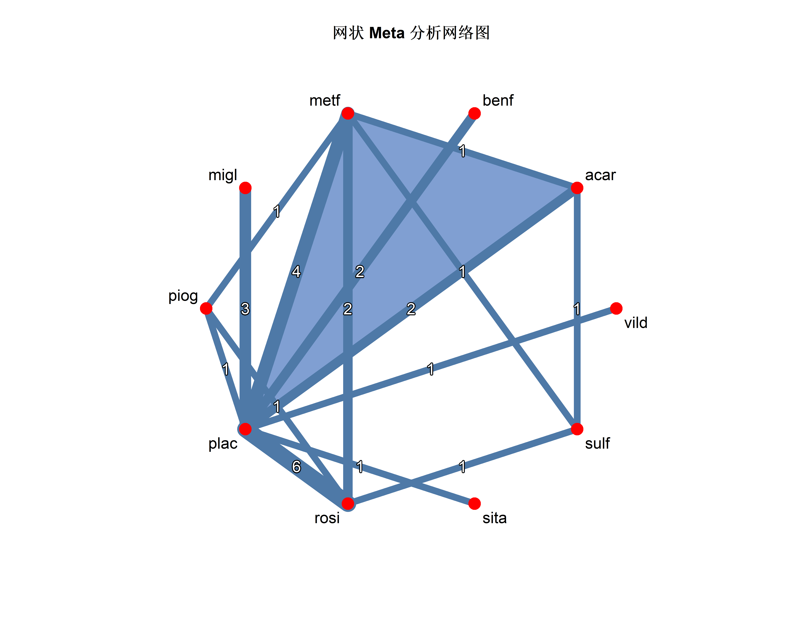
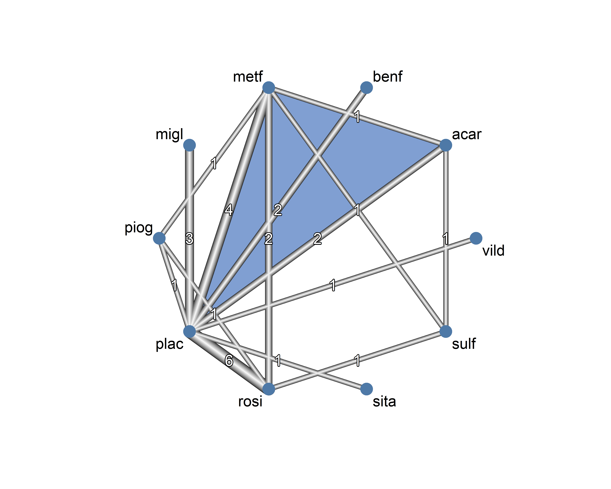
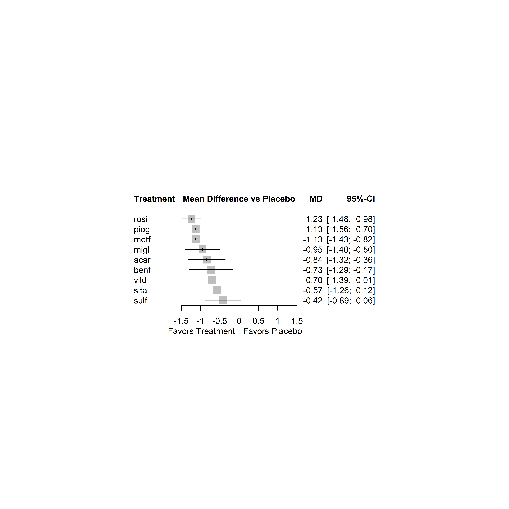
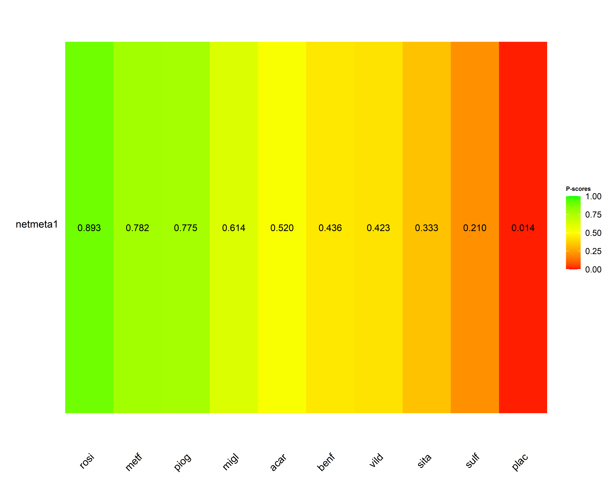
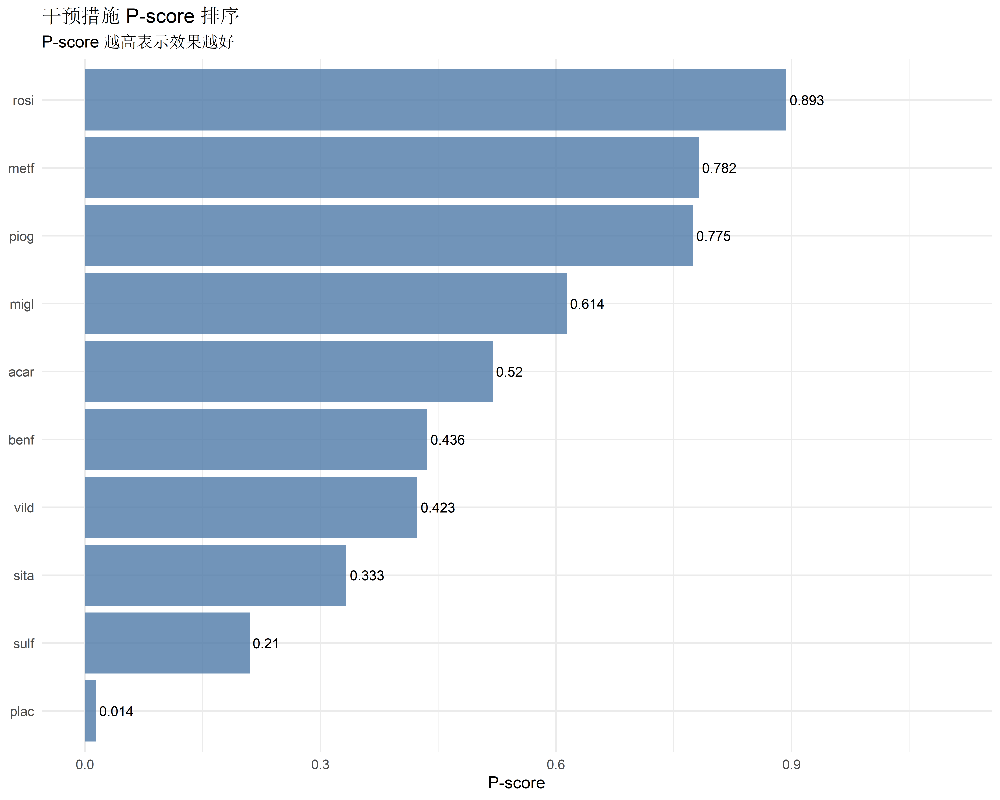
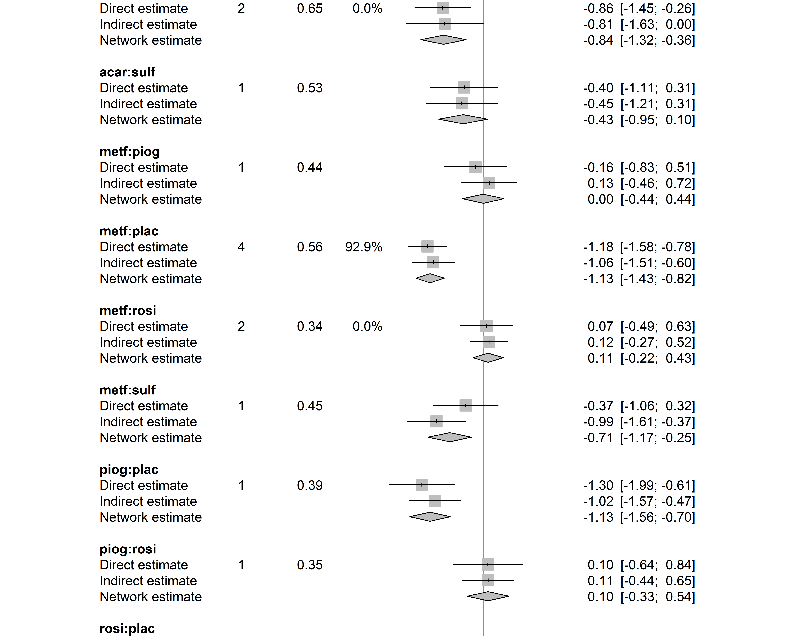
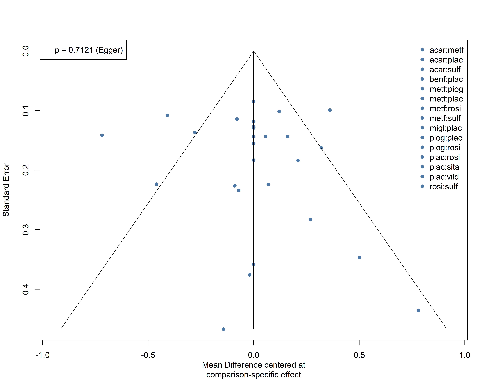
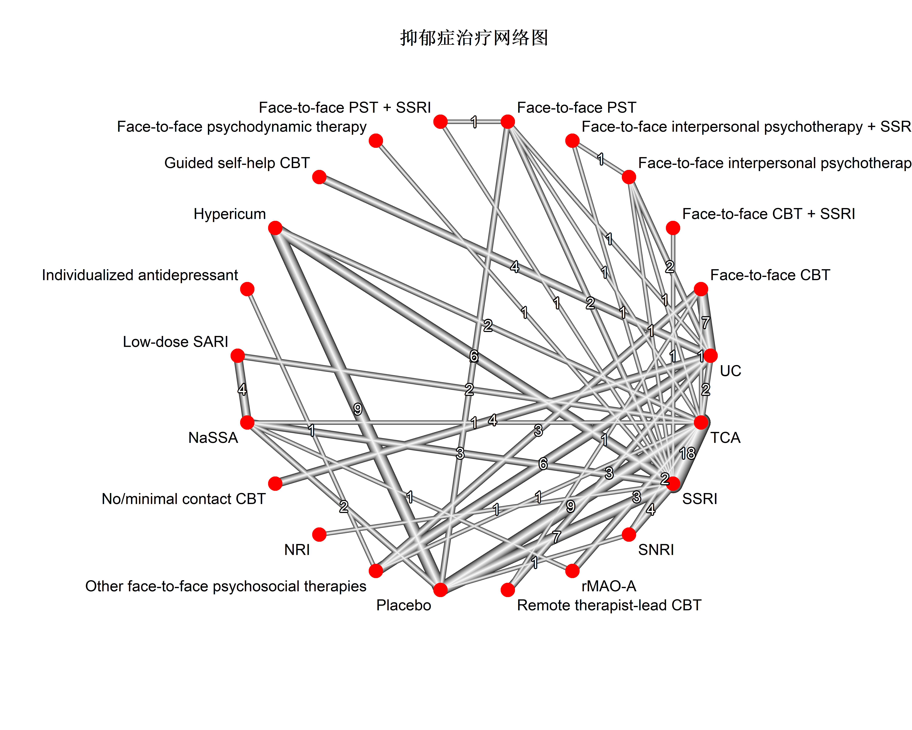
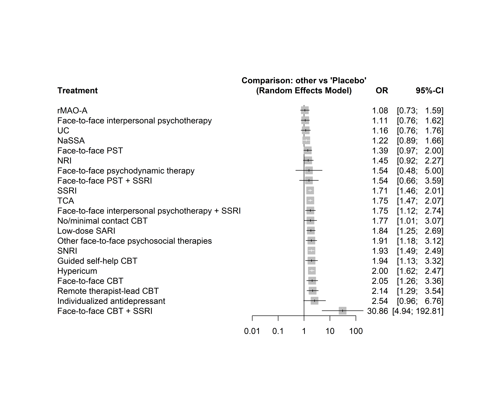

# install.packages("netmeta")
library(netmeta)
library(ggplot2)
library(dplyr)网状 Meta 分析 (Network Meta-Analysis) 完全指南
R包
Meta分析
网状分析
多种干预措施的间接比较：netmeta 包使用详解，从网络图到排序图的完整流程。
前言
传统 Meta 分析只能两两比较干预措施（如 A vs B）。但临床决策中，我们常需要同时比较多种干预措施。
网状 Meta 分析 (Network Meta-Analysis, NMA) 通过整合直接和间接证据，实现多种干预的同时比较和排序。
本教程将介绍 NMA 的基本原理和 R 语言 netmeta 包的完整使用流程。
1. 网状 Meta 分析基础
什么是网状 Meta？
考虑 3 种降压药的比较：
- 研究 1：药物 A vs 安慰剂
- 研究 2：药物 B vs 安慰剂
- 研究 3：药物 A vs 药物 B
传统 Meta 分析只能分别合成每对比较。而 NMA 可以：
- 同时比较所有干预：A vs B vs C vs 安慰剂
- 利用间接证据：即使没有 A vs C 的直接研究，也能通过 A-B-C 链条推断
- 对干预进行排序：给出”最佳”干预的概率
核心概念
| 概念 | 说明 |
|---|---|
| 节点 (Node) | 网络中的干预措施 |
| 边 (Edge) | 两种干预之间的比较 |
| 直接证据 | 来自头对头比较研究 |
| 间接证据 | 通过共同比较者推断 |
| 混合证据 | 直接 + 间接的加权组合 |
| 一致性 | 直接与间接证据是否吻合 |
基本假设
NMA 的核心假设是一致性 (Transitivity)：
如果 A vs B 的效应是 δ_AB，B vs C 是 δ_BC， 那么 A vs C 应该等于 δ_AB + δ_BC
这要求： - 研究间具有可比性（相似的人群、结局定义） - 不存在效应修饰因子导致的异质性
2. netmeta 包入门
安装与加载
数据格式
netmeta 支持两种数据格式：
对比格式 (Pairwise)：每行是一对比较
# 示例数据：抗抑郁药比较
data(Senn2013)
head(Senn2013) TE seTE treat1.long treat2.long treat1 treat2 studlab
1 -1.90 0.1414 Metformin Placebo metf plac DeFronzo1995
2 -0.82 0.0992 Metformin Placebo metf plac Lewin2007
3 -0.20 0.3579 Metformin Acarbose metf acar Willms1999
4 -1.34 0.1435 Rosiglitazone Placebo rosi plac Davidson2007
5 -1.10 0.1141 Rosiglitazone Placebo rosi plac Wolffenbuttel1999
6 -1.30 0.1268 Pioglitazone Placebo piog plac Kipnes2001臂格式 (Arm-based)：每行是一个研究臂
# 转换示例（如果数据是臂格式）
# pairwise() 函数可以转换基础 NMA 模型
# 运行网状 Meta 分析
nma_result <- netmeta(
TE = TE, # 效应量（log OR, log RR, MD 等）
seTE = seTE, # 效应量标准误
treat1 = treat1, # 干预 1
treat2 = treat2, # 干预 2
studlab = studlab, # 研究标识
data = Senn2013,
sm = "MD", # 效应量类型：Mean Difference
reference.group = "plac", # 参照组
common = FALSE, # 使用随机效应模型
random = TRUE
)
# 查看结果摘要
summary(nma_result)Original data (with adjusted standard errors for multi-arm studies):
treat1 treat2 TE seTE seTE.adj narms multiarm
DeFronzo1995 metf plac -1.9000 0.1414 0.3588 2
Lewin2007 metf plac -0.8200 0.0992 0.3443 2
Willms1999 acar metf 0.2000 0.3579 0.5574 3 *
Davidson2007 plac rosi 1.3400 0.1435 0.3596 2
Wolffenbuttel1999 plac rosi 1.1000 0.1141 0.3489 2
Kipnes2001 piog plac -1.3000 0.1268 0.3533 2
Kerenyi2004 plac rosi 0.7700 0.1078 0.3469 2
Hanefeld2004 metf piog -0.1600 0.0849 0.3405 2
Derosa2004 piog rosi 0.1000 0.1831 0.3772 2
Baksi2004 plac rosi 1.3000 0.1014 0.3450 2
Rosenstock2008 plac rosi 1.0900 0.2263 0.3999 2
Zhu2003 plac rosi 1.5000 0.1624 0.3675 2
Yang2003 metf rosi 0.1400 0.2239 0.3986 2
Vongthavaravat2002 rosi sulf -1.2000 0.1436 0.3596 2
Oyama2008 acar sulf -0.4000 0.1549 0.3643 2
Costa1997 acar plac -0.8000 0.1432 0.3595 2
Hermansen2007 plac sita 0.5700 0.1291 0.3541 2
Garber2008 plac vild 0.7000 0.1273 0.3534 2
Alex1998 metf sulf -0.3700 0.1184 0.3503 2
Johnston1994 migl plac -0.7400 0.1839 0.3775 2
Johnston1998a migl plac -1.4100 0.2235 0.3983 2
Kim2007 metf rosi -0.0000 0.2339 0.4043 2
Johnston1998b migl plac -0.6800 0.2828 0.4344 2
Gonzalez-Ortiz2004 metf plac -0.4000 0.4356 0.5463 2
Stucci1996 benf plac -0.2300 0.3467 0.4785 2
Moulin2006 benf plac -1.0100 0.1366 0.3569 2
Willms1999 metf plac -1.2000 0.3758 0.5802 3 *
Willms1999 acar plac -1.0000 0.4669 0.8122 3 *
Number of treatment arms (by study):
narms
DeFronzo1995 2
Lewin2007 2
Willms1999 3
Davidson2007 2
Wolffenbuttel1999 2
Kipnes2001 2
Kerenyi2004 2
Hanefeld2004 2
Derosa2004 2
Baksi2004 2
Rosenstock2008 2
Zhu2003 2
Yang2003 2
Vongthavaravat2002 2
Oyama2008 2
Costa1997 2
Hermansen2007 2
Garber2008 2
Alex1998 2
Johnston1994 2
Johnston1998a 2
Kim2007 2
Johnston1998b 2
Gonzalez-Ortiz2004 2
Stucci1996 2
Moulin2006 2
Results (random effects model):
treat1 treat2 MD 95%-CI
DeFronzo1995 metf plac -1.1268 [-1.4291; -0.8244]
Lewin2007 metf plac -1.1268 [-1.4291; -0.8244]
Willms1999 acar metf 0.2850 [-0.2208; 0.7908]
Davidson2007 plac rosi 1.2335 [ 0.9830; 1.4839]
Wolffenbuttel1999 plac rosi 1.2335 [ 0.9830; 1.4839]
Kipnes2001 piog plac -1.1291 [-1.5596; -0.6986]
Kerenyi2004 plac rosi 1.2335 [ 0.9830; 1.4839]
Hanefeld2004 metf piog 0.0023 [-0.4398; 0.4444]
Derosa2004 piog rosi 0.1044 [-0.3347; 0.5435]
Baksi2004 plac rosi 1.2335 [ 0.9830; 1.4839]
Rosenstock2008 plac rosi 1.2335 [ 0.9830; 1.4839]
Zhu2003 plac rosi 1.2335 [ 0.9830; 1.4839]
Yang2003 metf rosi 0.1067 [-0.2170; 0.4304]
Vongthavaravat2002 rosi sulf -0.8169 [-1.2817; -0.3521]
Oyama2008 acar sulf -0.4252 [-0.9456; 0.0951]
Costa1997 acar plac -0.8418 [-1.3236; -0.3600]
Hermansen2007 plac sita 0.5700 [-0.1240; 1.2640]
Garber2008 plac vild 0.7000 [ 0.0073; 1.3927]
Alex1998 metf sulf -0.7102 [-1.1713; -0.2491]
Johnston1994 migl plac -0.9497 [-1.4040; -0.4955]
Johnston1998a migl plac -0.9497 [-1.4040; -0.4955]
Kim2007 metf rosi 0.1067 [-0.2170; 0.4304]
Johnston1998b migl plac -0.9497 [-1.4040; -0.4955]
Gonzalez-Ortiz2004 metf plac -1.1268 [-1.4291; -0.8244]
Stucci1996 benf plac -0.7311 [-1.2918; -0.1705]
Moulin2006 benf plac -0.7311 [-1.2918; -0.1705]
Willms1999 metf plac -1.1268 [-1.4291; -0.8244]
Willms1999 acar plac -0.8418 [-1.3236; -0.3600]
Number of studies: k = 26
Number of pairwise comparisons: m = 28
Number of treatments: n = 10
Number of designs: d = 15
Random effects model
Treatment estimate (sm = 'MD', comparison: other treatments vs 'plac'):
MD 95%-CI z p-value
acar -0.8418 [-1.3236; -0.3600] -3.42 0.0006
benf -0.7311 [-1.2918; -0.1705] -2.56 0.0106
metf -1.1268 [-1.4291; -0.8244] -7.30 < 0.0001
migl -0.9497 [-1.4040; -0.4955] -4.10 < 0.0001
piog -1.1291 [-1.5596; -0.6986] -5.14 < 0.0001
plac . . . .
rosi -1.2335 [-1.4839; -0.9830] -9.65 < 0.0001
sita -0.5700 [-1.2640; 0.1240] -1.61 0.1075
sulf -0.4166 [-0.8887; 0.0556] -1.73 0.0838
vild -0.7000 [-1.3927; -0.0073] -1.98 0.0476
Quantifying heterogeneity / inconsistency:
tau^2 = 0.1087; tau = 0.3297; I^2 = 81.4% [72.0%; 87.7%]
Tests of heterogeneity (within designs) and inconsistency (between designs):
Q d.f. p-value
Total 96.99 18 < 0.0001
Within designs 74.46 11 < 0.0001
Between designs 22.53 7 0.0021
Details of network meta-analysis methods:
- Frequentist graph-theoretical approach
- DerSimonian-Laird estimator for tau^2
- Calculation of I^2 based on Q3. 网络图可视化
基础网络图
# 绘制网络结构图
netgraph(nma_result,
cex = 1.2, # 节点文字大小
cex.points = 3, # 节点大小
col = "#4e79a7", # 节点颜色
thickness = "number.of.studies", # 边的粗细
plastic = FALSE,
multiarm = TRUE
)
title("网状 Meta 分析网络图")
美化网络图
# 更精细的网络图
netgraph(nma_result,
cex = 1.5,
cex.points = 4,
col = "gray30",
col.points = "#4e79a7",
thickness = "number.of.studies",
plastic = TRUE,
points = TRUE,
multiarm = TRUE,
number.of.studies = TRUE # 显示研究数量
)
ggplot 风格网络图
# 提取网络信息用于 ggplot
network_info <- netconnection(nma_result)
# 获取节点和边数据
nodes <- data.frame(
treatment = nma_result$trts,
n_studies = rowSums(nma_result$A.matrix)
)
# 使用 ggraph 绑制（需安装 ggraph）
# library(ggraph)
# library(igraph)
# 简单可视化
cat(
"网络包含", nma_result$n, "项研究，",
length(nma_result$trts), "种干预措施\n"
)网络包含 10 项研究， 10 种干预措施4. 效应量与排序
成对比较森林图
# 相对于参照组的森林图
forest(nma_result,
reference.group = "plac",
sortvar = TE,
smlab = "Mean Difference vs Placebo",
label.left = "Favors Treatment",
label.right = "Favors Placebo"
)
联赛表 (League Table)
# 生成联赛表
league_table <- netleague(nma_result,
bracket = "(",
digits = 2
)
# 显示效应量矩阵
print(league_table$common, row.names = TRUE) acar benf metf
acar acar . 0.20 (-0.50; 0.90)
benf 0.08 (-0.25; 0.41) benf .
metf 0.29 ( 0.06; 0.51) 0.21 (-0.07; 0.48) metf
migl 0.12 (-0.21; 0.44) 0.04 (-0.31; 0.39) -0.17 (-0.44; 0.10)
piog 0.24 (-0.01; 0.49) 0.16 (-0.13; 0.45) -0.05 (-0.18; 0.09)
plac -0.83 (-1.04; -0.61) -0.91 (-1.15; -0.66) -1.11 (-1.23; -1.00)
rosi 0.37 ( 0.15; 0.60) 0.30 ( 0.03; 0.56) 0.09 (-0.04; 0.22)
sita -0.26 (-0.59; 0.07) -0.34 (-0.69; 0.02) -0.54 (-0.82; -0.27)
sulf -0.39 (-0.61; -0.17) -0.47 (-0.77; -0.16) -0.67 (-0.85; -0.50)
vild -0.13 (-0.46; 0.20) -0.21 (-0.56; 0.15) -0.41 (-0.69; -0.14)
migl piog plac
acar . . -0.82 (-1.09; -0.55)
benf . . -0.91 (-1.15; -0.66)
metf . -0.16 (-0.33; 0.01) -1.15 (-1.31; -1.00)
migl migl . -0.94 (-1.19; -0.70)
piog 0.12 (-0.17; 0.41) piog -1.30 (-1.55; -1.05)
plac -0.94 (-1.19; -0.70) -1.07 (-1.22; -0.92) plac
rosi 0.26 (-0.01; 0.52) 0.14 (-0.02; 0.30) 1.20 ( 1.11; 1.30)
sita -0.37 (-0.73; -0.02) -0.50 (-0.79; -0.20) 0.57 ( 0.32; 0.82)
sulf -0.50 (-0.81; -0.20) -0.63 (-0.84; -0.42) 0.44 ( 0.26; 0.62)
vild -0.24 (-0.60; 0.11) -0.37 (-0.66; -0.08) 0.70 ( 0.45; 0.95)
rosi sita sulf
acar . . -0.40 (-0.70; -0.10)
benf . . .
metf 0.07 (-0.24; 0.39) . -0.37 (-0.60; -0.14)
migl . . .
piog 0.10 (-0.26; 0.46) . .
plac 1.15 ( 1.05; 1.25) 0.57 ( 0.32; 0.82) .
rosi rosi . -1.20 (-1.48; -0.92)
sita -0.63 (-0.90; -0.36) sita .
sulf -0.76 (-0.94; -0.58) -0.13 (-0.44; 0.18) sulf
vild -0.50 (-0.77; -0.24) 0.13 (-0.23; 0.49) 0.26 (-0.05; 0.57)
vild
acar .
benf .
metf .
migl .
piog .
plac 0.70 ( 0.45; 0.95)
rosi .
sita .
sulf .
vild vild排序分析
# 计算 P-scores（频率学派排序）
netrank_result <- netrank(nma_result, small.values = "good")
# 查看排序结果
print(netrank_result) P-score
rosi 0.8934
metf 0.7818
piog 0.7746
migl 0.6137
acar 0.5203
benf 0.4358
vild 0.4232
sita 0.3331
sulf 0.2103
plac 0.0139# 绘制排序图
plot(netrank_result)
SUCRA 曲线
# 计算累积排序概率（SUCRA）
# netmeta 使用 P-score，与贝叶斯的 SUCRA 类似
# 可视化排序
ranking_df <- data.frame(
Treatment = names(netrank_result$Pscore.random),
P_score = netrank_result$Pscore.random
) %>%
arrange(desc(P_score))
ggplot(ranking_df, aes(x = reorder(Treatment, P_score), y = P_score)) +
geom_col(fill = "#4e79a7", alpha = 0.8) +
geom_text(aes(label = round(P_score, 3)), hjust = -0.1, size = 3.5) +
coord_flip() +
ylim(0, 1.1) +
labs(
title = "干预措施 P-score 排序",
subtitle = "P-score 越高表示效果越好",
x = NULL,
y = "P-score"
) +
theme_minimal(base_size = 12)
5. 一致性检验
全局一致性检验
# 整体一致性检验（设计 × 干预交互）
decomp <- decomp.design(nma_result)
print(decomp)Q statistics to assess homogeneity / consistency
Q df p-value
Total 96.99 18 < 0.0001
Within designs 74.46 11 < 0.0001
Between designs 22.53 7 0.0021
Design-specific decomposition of within-designs Q statistic
Design Q df p-value
plac:metf 42.16 2 < 0.0001
plac:rosi 21.27 5 0.0007
plac:benf 4.38 1 0.0363
plac:migl 6.45 2 0.0398
metf:rosi 0.19 1 0.6655
Between-designs Q statistic after detaching of single designs
(influential designs have p-value markedly different from 0.0021)
Detached design Q df p-value
rosi:sulf 6.77 6 0.3425
metf:sulf 7.51 6 0.2760
plac:rosi 16.29 6 0.0123
metf:piog 17.13 6 0.0088
plac:piog 17.25 6 0.0084
plac:metf 22.07 6 0.0012
plac:acar 22.44 6 0.0010
piog:rosi 22.48 6 0.0010
acar:sulf 22.52 6 0.0010
metf:rosi 22.52 6 0.0010
plac:acar:metf 22.38 5 0.0004
Q statistic to assess consistency under the assumption of
a full design-by-treatment interaction random effects model
Q df p-value tau.within tau2.within
Between designs 2.19 7 0.9483 0.3797 0.1442结果解读： - Between-designs 异质性：不同研究设计之间的差异 - p 值显著表示存在不一致性
局部不一致性：节点分割法
# 节点分割比较直接和间接证据
netsplit_result <- netsplit(nma_result)
# 查看结果
print(netsplit_result)Separate indirect from direct evidence (SIDE) using back-calculation method
Random effects model:
comparison k prop nma direct indir. Diff z p-value
acar:metf 1 0.28 0.2850 0.2000 0.3182 -0.1182 -0.21 0.8368
acar:plac 2 0.65 -0.8418 -0.8567 -0.8138 -0.0429 -0.08 0.9338
acar:sulf 1 0.53 -0.4252 -0.4000 -0.4538 0.0538 0.10 0.9194
metf:piog 1 0.44 0.0023 -0.1600 0.1293 -0.2893 -0.64 0.5245
metf:plac 4 0.56 -1.1268 -1.1810 -1.0576 -0.1234 -0.40 0.6912
metf:rosi 2 0.34 0.1067 0.0710 0.1250 -0.0540 -0.15 0.8771
metf:sulf 1 0.45 -0.7102 -0.3700 -0.9896 0.6196 1.31 0.1900
piog:plac 1 0.39 -1.1291 -1.3000 -1.0214 -0.2786 -0.62 0.5368
piog:rosi 1 0.35 0.1044 0.1000 0.1067 -0.0067 -0.01 0.9885
rosi:plac 6 0.76 -1.2335 -1.1797 -1.4004 0.2206 0.74 0.4587
rosi:sulf 1 0.43 -0.8169 -1.2000 -0.5222 -0.6778 -1.42 0.1565
Legend:
comparison - Treatment comparison
k - Number of studies providing direct evidence
prop - Direct evidence proportion
nma - Estimated treatment effect (MD) in network meta-analysis
direct - Estimated treatment effect (MD) derived from direct evidence
indir. - Estimated treatment effect (MD) derived from indirect evidence
Diff - Difference between direct and indirect treatment estimates
z - z-value of test for disagreement (direct versus indirect)
p-value - p-value of test for disagreement (direct versus indirect)# 可视化
forest(netsplit_result)
净热图 (Net Heat Plot)
# 热图展示不一致性
netheat(nma_result, random = TRUE)6. 亚组与敏感性分析
亚组分析
# 按研究特征分层的亚组分析
# 需要在数据中添加亚组变量
nma_subgroup <- netmeta(
TE, seTE, treat1, treat2, studlab,
data = subset(Senn2013, year >= 2000), # 只用 2000 年后的研究
sm = "MD",
reference.group = "plac",
random = TRUE
)敏感性分析：排除高风险研究
# 排除某些研究的敏感性分析
nma_sensitivity <- netmeta(
TE, seTE, treat1, treat2, studlab,
data = subset(Senn2013, !studlab %in% c("Study1", "Study2")),
sm = "MD",
reference.group = "plac",
random = TRUE
)
# 比较排序变化
compare_rankings <- data.frame(
Original = netrank(nma_result)$Pscore.random,
Sensitivity = netrank(nma_sensitivity)$Pscore.random
)留一法敏感性分析
# 留一法分析
loo_result <- nma_result # 需要手动循环实现
# 或使用贡献矩阵
# netcontrib(nma_result)7. 发表偏倚评估
比较调整漏斗图
# 漏斗图
funnel(nma_result,
order = nma_result$trts,
pch = 16,
col = "#4e79a7",
linreg = TRUE
)
Egger 检验
# metabias 需要成对数据
# 可以使用 netmeta 的漏斗图进行视觉评估8. 完整案例分析
数据准备
# 使用内置抑郁症治疗数据
data("Linde2016")
head(Linde2016) id author year treat1 treat2
1 1 Lecrubier 1997 SNRI Placebo
2 1 Lecrubier 1997 TCA Placebo
3 1 Lecrubier 1997 TCA SNRI
40 2 Smit 2006 Face-to-face CBT UC
62 4 Blashki 1971 TCA Placebo
72 5 Bedi 2000 Ind drug Other face-to-face
treat1.long treat2.long
1 SNRI Placebo
2 TCA Placebo
3 TCA SNRI
40 Face-to-face CBT UC
62 TCA Placebo
72 Individualized antidepressant Other face-to-face psychosocial therapies
lnOR selnOR resp1 n1 resp2 n2
1 0.664976 0.358845 60 78 48 76
2 0.094727 0.339731 49 75 48 76
3 -0.570249 0.362066 49 75 60 78
40 0.466237 0.411963 16 44 19 72
62 0.916291 0.555278 20 35 8 23
72 0.283880 0.411890 20 51 17 52运行分析
# 完整的 NMA 流程
nma_depression <- netmeta(
lnOR, # log Odds Ratio
selnOR, # 标准误
treat1.long, treat2.long, # 干预名称
id, # 研究 ID
data = Linde2016,
sm = "OR", # Odds Ratio
reference.group = "Placebo",
common = FALSE,
random = TRUE
)结果汇总
# 1. 网络图
netgraph(nma_depression,
plastic = TRUE,
thickness = "number.of.studies",
cex.points = 3
)
title("抑郁症治疗网络图")
# 2. 森林图
forest(nma_depression,
reference.group = "Placebo",
sortvar = TE,
digits = 2
)
# 3. 排序
rank_depression <- netrank(nma_depression, small.values = "bad")
print(rank_depression) P-score
Face-to-face CBT + SSRI 0.9983
Individualized antidepressant 0.7623
Remote therapist-lead CBT 0.7424
Hypericum 0.7164
Face-to-face CBT 0.7071
SNRI 0.6719
Guided self-help CBT 0.6455
Other face-to-face psychosocial therapies 0.6344
Low-dose SARI 0.6067
Face-to-face interpersonal psychotherapy + SSRI 0.5571
No/minimal contact CBT 0.5518
TCA 0.5481
SSRI 0.5198
Face-to-face psychodynamic therapy 0.4529
Face-to-face PST + SSRI 0.4465
NRI 0.3704
Face-to-face PST 0.3211
NaSSA 0.2158
UC 0.1728
Face-to-face interpersonal psychotherapy 0.1475
rMAO-A 0.1367
Placebo 0.0744一致性检验
# 设计分解
decomp_depression <- decomp.design(nma_depression)
# 节点分割
split_depression <- netsplit(nma_depression)9. 报告与图表导出
结果表格
# 生成可发表的结果表格
results_table <- data.frame(
Treatment = names(netrank(nma_result)$Pscore.random),
`P-score` = round(netrank(nma_result)$Pscore.random, 3),
`Rank` = rank(-netrank(nma_result)$Pscore.random)
) %>%
arrange(Rank)
knitr::kable(results_table,
caption = "干预措施效果排序",
row.names = FALSE
)| Treatment | P.score | Rank |
|---|---|---|
| rosi | 0.893 | 1 |
| metf | 0.782 | 2 |
| piog | 0.775 | 3 |
| migl | 0.614 | 4 |
| acar | 0.520 | 5 |
| benf | 0.436 | 6 |
| vild | 0.423 | 7 |
| sita | 0.333 | 8 |
| sulf | 0.210 | 9 |
| plac | 0.014 | 10 |
导出高质量图表
# 导出网络图
pdf("network_graph.pdf", width = 8, height = 8)
netgraph(nma_result, plastic = TRUE, thickness = "number.of.studies")
dev.off()
# 导出森林图
pdf("forest_plot.pdf", width = 10, height = 12)
forest(nma_result, reference.group = "plac")
dev.off()10. 高级主题
贝叶斯 NMA (gemtc)
# 贝叶斯方法使用 gemtc 包
# install.packages("gemtc")
library(gemtc)
# 需要 JAGS 软件
# 提供更灵活的建模和完整的后验分布多成分干预 NMA
# 对于组合干预（如 A+B vs A vs B）
# 使用 netmeta 的多成分分析功能
# nma_additive <- netmeta(..., , additive = TRUE)质量评估 CINeMA
# 使用 CINeMA 框架评估 NMA 证据质量
# 考虑：研究内偏倚、报告偏倚、间接性、不精确性、异质性、不一致性
quality_table <- data.frame(
Domain = c(
"Within-study bias", "Reporting bias", "Indirectness",
"Imprecision", "Heterogeneity", "Incoherence"
),
Assessment = c(
"Some concerns", "Low", "Low",
"Some concerns", "Low", "Low"
),
Notes = c(
"部分研究质量中等", "漏斗图对称",
"人群和干预相似", "样本量有限",
"I²中等", "一致性检验不显著"
)
)
knitr::kable(quality_table, caption = "CINeMA 证据质量评估")| Domain | Assessment | Notes |
|---|---|---|
| Within-study bias | Some concerns | 部分研究质量中等 |
| Reporting bias | Low | 漏斗图对称 |
| Indirectness | Low | 人群和干预相似 |
| Imprecision | Some concerns | 样本量有限 |
| Heterogeneity | Low | I²中等 |
| Incoherence | Low | 一致性检验不显著 |
注意事项与建议
[!WARNING] NMA 的关键假设检验： 1. 一致性假设必须通过检验验证 2. 网络必须是连通的（所有干预需相连） 3. 研究间异质性需要控制在合理范围
[!TIP] 实践建议： - 先绘制网络图，了解证据结构 - 使用随机效应模型处理异质性 - 同时报告 P-score 和 95% CI - 进行敏感性分析验证结果稳健性
参考文献
Rücker, G., & Schwarzer, G. (2015). Ranking treatments in frequentist network meta-analysis works without resampling methods. BMC Medical Research Methodology, 15(1), 58.
Salanti, G. (2012). Indirect and mixed-treatment comparison, network, or multiple-treatments meta-analysis: many names, many benefits, many concerns for the next generation evidence synthesis tool. Research Synthesis Methods, 3(2), 80-97.
Chaimani, A., et al. (2013). Graphical tools for network meta-analysis in STATA. PLoS ONE, 8(10), e76654.
Nikolakopoulou, A., et al. (2020). CINeMA: An approach for assessing confidence in the results of a network meta-analysis. PLoS Medicine, 17(4), e1003082.